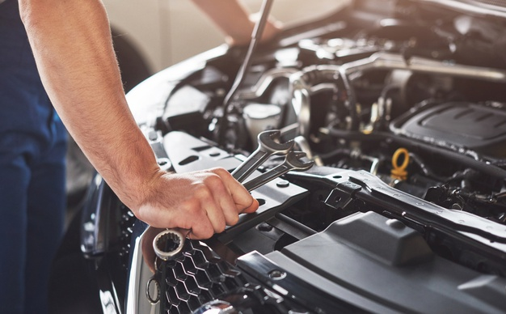
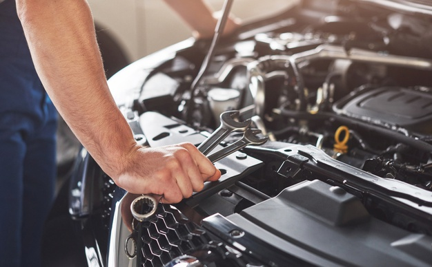

¿Quienes somos?
En Serviteca Don Julio, somos líderes en el cuidado y mantenimiento de neumáticos. Con 10 años de experiencia, brindamos servicios confiables y de calidad para asegurar la seguridad y el rendimiento de tus llantas. Nuestro equipo altamente capacitado se dedica a ofrecer un servicio personalizado y garantizado, utilizando productos y equipos de la más alta calidad. Confía en nosotros para cuidar tus neumáticos y garantizar un viaje seguro.